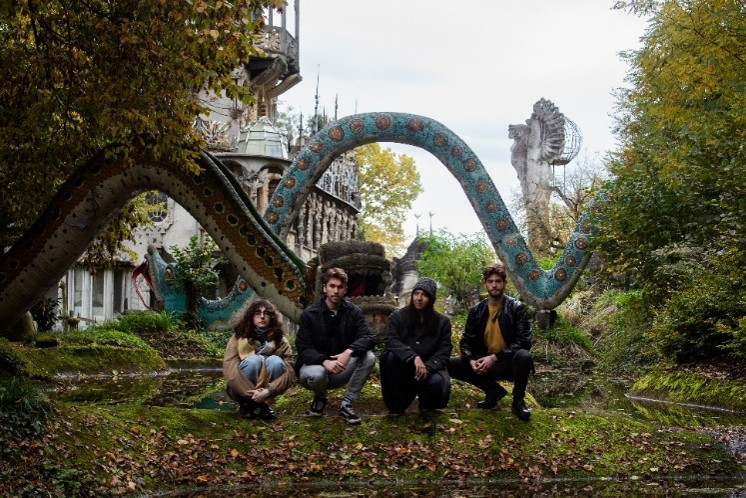

BANDPORTRAIT · 23. NOVEMBER 2026
Mirkwood Spiders – Stoner-Riffs aus Graubünden
Schwere Gitarrenriffs, experimentelle Klänge und eingängige Melodien – Mirkwood Spiders aus Chur verbindet Stoner Rock, Doom und Progressive Rock zu einem ganz eigenen Sound. Seit 2016 begeistert die Band mit abwechslungsreicher Rockmusik und energiegeladenen Live-Auftritten.

Von Chur auf die Bühne
Die Geschichte von Mirkwood Spiders beginnt im Herbst 2016 in Chur. Was ursprünglich als Stoner-/Doom-Projekt startete, entwickelte sich über die Jahre zu einer vielseitigen Rockband mit einem ganz eigenen musikalischen Charakter.
Das erste Jahr verbrachten die Musiker hauptsächlich im Proberaum, wo sie an ihren eigenen Songs arbeiteten. Bereits im Winter entstanden die ersten Demoaufnahmen.
Ein wichtiger Meilenstein folgte 2017: Mirkwood Spiders qualifizierte sich beim Nachwuchswettbewerb bandXost für das Finale in der Grabenhalle St. Gallen. Dadurch eröffneten sich weitere Möglichkeiten, unter anderem ein Auftritt beim Out In The Gurin in Sargans im Jahr 2018.
Schwere Riffs und experimentelle Sounds
Wer Mirkwood Spiders hört, merkt schnell: Die Band lässt sich nicht auf eine einzige Musikrichtung reduzieren. Ihre Wurzeln liegen im Stoner Rock und Doom Metal, doch ihr Sound geht mittlerweile weit darüber hinaus.
Schwere Gitarrenriffs treffen auf experimentelle Passagen, psychedelische Elemente und eingängige Melodien. Auch Einflüsse aus Progressive Rock und Metal sind in ihrer Musik zu hören.
Neben dem vielseitigen Klang legt die Band auch Wert auf ihre Texte, die zum Nachdenken anregen. So entstehen Songs, die sowohl musikalisch als auch inhaltlich etwas zu bieten haben.
HEAVY RIFFS. EXPERIMENTAL SOUNDS.

Die Gesichter hinter Mirkwood Spiders
Hinter dem Sound von Mirkwood Spiders stehen vier Musiker, die ihre unterschiedlichen musikalischen Einflüsse in die Band einbringen.
Vincent Pas
LEAD GUITAR & BACKING VOCALS
Lars Gwendolin Good
BASS & BACKING VOCALS
Nando Däscher
DRUMS & BACKING VOCALS
Sebastian Boner
LEAD VOCALS & GUITAR
Von Graubünden bis über die Landesgrenzen
Seit 2017 stand Mirkwood Spiders auf zahlreichen Bühnen in der Ostschweiz, in Zürich, Luzern und Liechtenstein. Dabei konnte die Band bereits an verschiedenen Festivals ihr Können unter Beweis stellen.
Zu ihren bisherigen Auftritten gehören unter anderem das Calanda Spring Festival in Chur, das Out In The Gurin in Sargans, Rock am Gleis in Rheineck, das Anapenair in Urnäsch und das Bambole Openair in Winterthur.
2022 erreichte die Band beim bandXost-Finale in der Grabenhalle St. Gallen den dritten Platz. Auch 2026 war sie wieder live unterwegs, unter anderem am Openair Safiental, am Churerfest, am Laternenfest in Bad Homburg und beim Showcase-Festival im Cuadro 22 in Chur.
Mirkwood Spiders live erleben
Wer auf druckvolle Gitarrenriffs, abwechslungsreiche Rockmusik und experimentelle Sounds steht, sollte Mirkwood Spiders unbedingt im Auge behalten.
Informationen zu kommenden Auftritten und Neuigkeiten rund um die Band findest du auf ihrer offiziellen Website oder in unserem Eventkalender.
Mehr von Mirkwood Spiders
Du möchtest mehr über die Band erfahren oder wissen, wann sie das nächste Mal auf der Bühne steht?